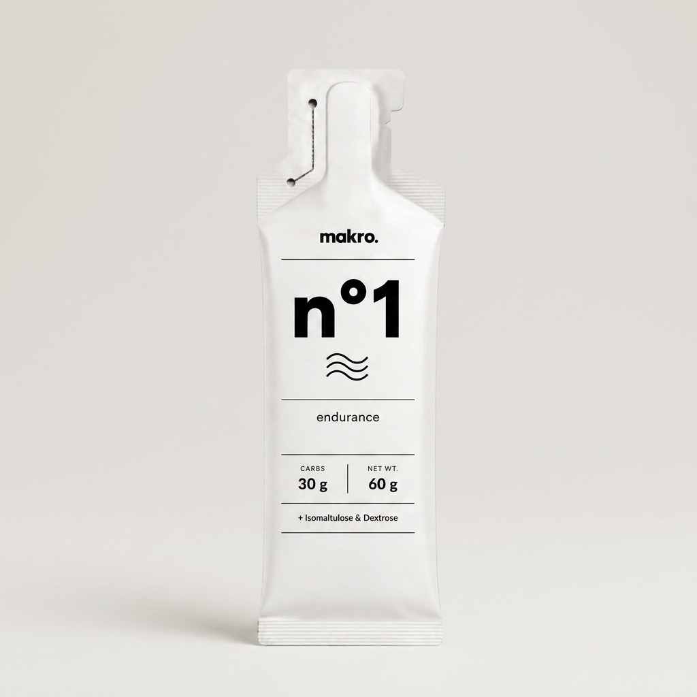
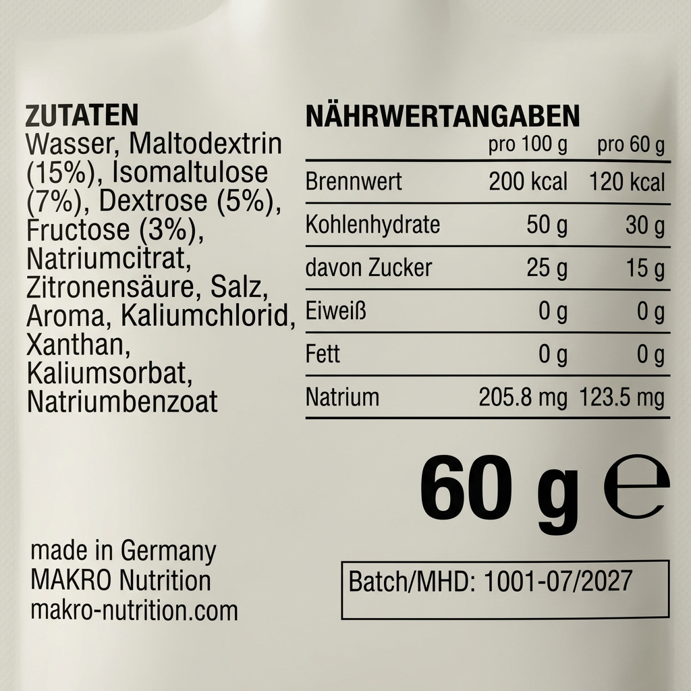
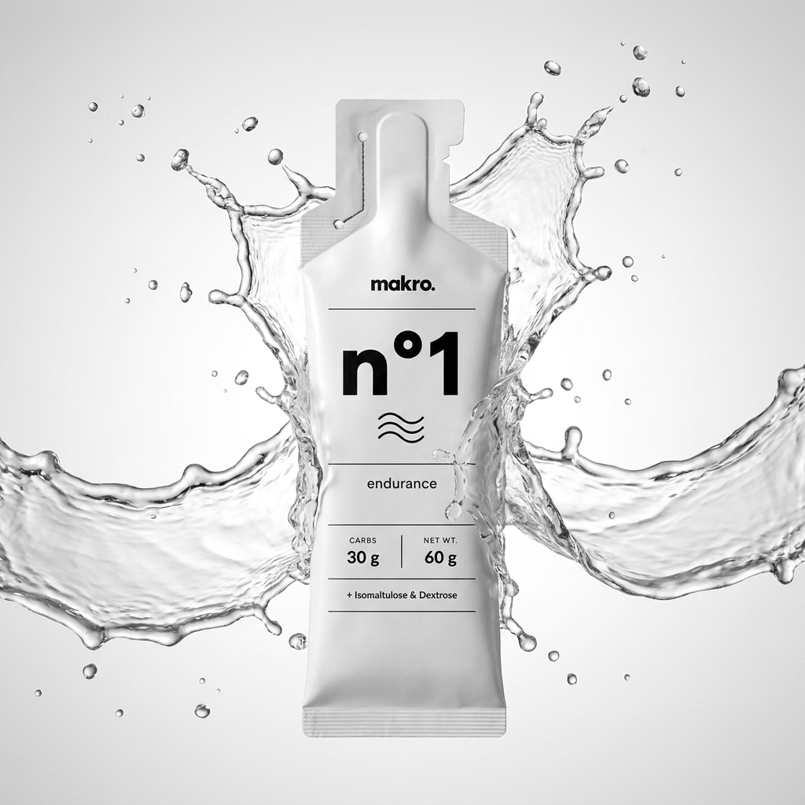
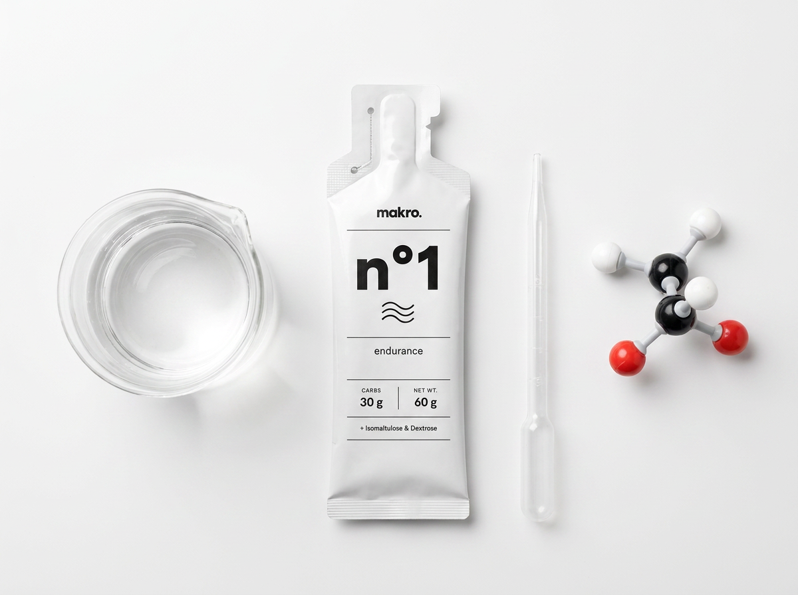

n°1
Endurance
Energy Gel
30g Carbs (Maltodextrin, Isomaltulose, Dextrose, Fructose) für lang anhaltende, gleichmäßige Energie ohne Magenprobleme.
- Carbs30 g
- Net Wt.60 g
makro. n°1 liefert 30g Carbs pro Sachet aus einer Maltodextrin-Isomaltulose-Dextrose-Fructose-Matrix für gleichmäßige Energiefreisetzung ohne Blutzucker-Crash.

Auf einen physiologischen Anwendungsfall ausgelegt — Energiezufuhr während der Belastung.


30g Carbs (Maltodextrin, Isomaltulose, Dextrose, Fructose) für lang anhaltende, gleichmäßige Energie ohne Magenprobleme.
Wir formulieren auf Basis peer-reviewter Studien zu Substratverwertung, Glykogen-Resynthese und Magen-Darm-Toleranz — keine proprietären "Geheimformeln".
Die Kombination aus schnell verfügbarem Maltodextrin, langsam hydrolysierter Isomaltulose (Glyk. Index ≈ 32), schnell verfügbarer Dextrose und über GLUT5 aufgenommener Fructose sorgt für eine breit gestaffelte Energiefreisetzung mit flacherer Blutzucker- und Insulinantwort.
Die Kombination unterschiedlicher Kohlenhydrattransporter (SGLT1 & GLUT5) erhöht die maximale Oxidationsrate exogener Kohlenhydrate und reduziert gastrointestinale Beschwerden bei hohen Zufuhrmengen.
